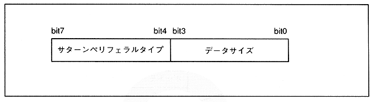

Saturn peripheral ID consists of peripheral type and data size. With the Saturn peripheral ID, you can recognize the configuration and contents of the peripheral data. The configuration of the Saturn peripheral ID is shown in Figure 3.15.
Figure 3.15 Saturn Peripheral ID Configuration
